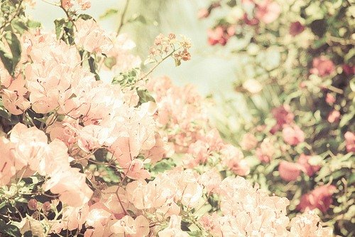
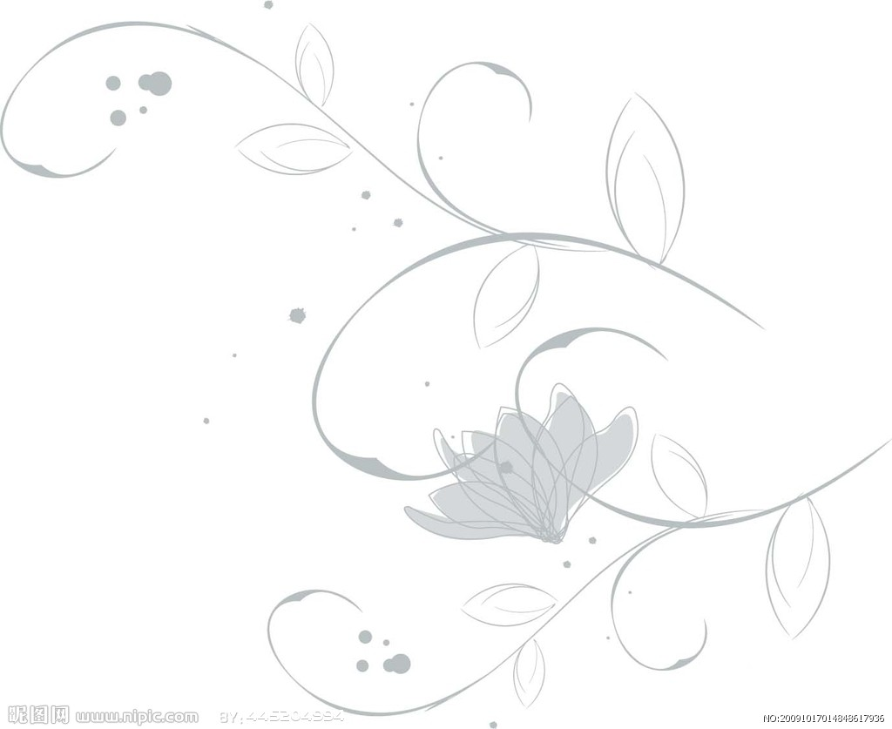

FELISSIMO SHOPPING
分類
商品紹介
商品写真
商品コメント
商品紹介
私は周夢と申します。
商品写真

This is Picture1.

This is Picture1.
商品コメント
父
彼女は誠実、謙遜で信用を重視し、仕事に対して緻密で、責任感を持って真面目な子です。何事でも計画性があり、興味を持っていることに情熱があります。学習能力も新しい物事や環境を受け入れる能力も高くて強いです。
孫雅琳(研究室の先輩)
化粧品やファッションに敏感です。いろいろアドバイスしてくれます。いつも笑顔で優しい人です。向上心があり、一度決まったことは、最後までかんばってやり抜く人です。
王騰(大学時代の友達)
周さんは明るくて優しい友達です。大学時代、いつも元気いっぱいでした。学習態度は真面目、チームワークという精神に富み、潜在能力が高いと思います。また、困難に直面でき、自己調整力も強く、責任感、向上心も強い人間だと思います。
呉奉賢(10年以上の友達)
周さんは友達と真心で付き合います。明らかな性格があり、コミュニケーション能力も良好で、いつも積極的な態度をもって物事を扱います。また、時間に観念が強く、向上心も強い。彼女は心を通わす友達です。さらに一生の友達です。
刁秀秀(10年ぐらいの友達)
彼女は頭がいいし、明るく優しく、熱心で辛抱強い人だと思います。学習能力が強い。また、私は悩んだことがあったら、いつも周さんに相談し、聞き上手な人だと思います。
曾冰(大学時代の友達)
非常に付き合いやすく、楽観的な人です。ずっと語学の勉強に熱中していたので、成績はかなり優秀です。粘り強い人とも言えます。なんでもやり始めると、他人に負けたくない性格だと考えられます。
李カンハ(研究室の友達)
周さんはとても真面目な人で、責任感も強いです。アルバイト先が一緒でとても感心していますのは、どんなことを任せても素早く慣れられる人です。それに、彼女は数字敏感で、数字を覚える能力が抜群だと思います。何よりも、周さんはファッションに興味深くて、今まで、何回も周さんからアドバイスをもらい、とても役にたったと思います。
于潔(研究室の友達)
最初、周さんと出会った時は広島大学で日本語研修の頃でした。真っ赤なコートでおしゃれな人だなあと思いました。接触してみれば、結構ファッションや美容に関して自分のこだわりを持つ人で、よくアドバイスをくれました。就職活動もお互いに励ましていて、私のことを優しく聞いてくれました。
朱錦(中学校からの友達)
周さんは正直に人と付き合い、素直な人です。交際が広いです。何事でも決まったら、力を尽くしてやりぬきます。勤勉で、責任感がある彼女はきっと素晴らしい仕事仲間だと思います。
呉華艶(研究室の友達)
周さんは性格がさっぱりしていて、自分の意見をちゃんと言えると思います。また、日頃のファッションセンスにも優れていて、自分らしいスタイルを持ち、見るたびにかわいいと思います。
商品コメント